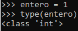
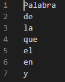
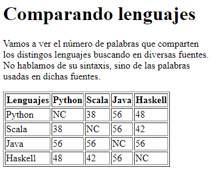

En los último años, Python se ha convertido en uno de los lenguajes de programación más utilizados en el campo del Big Data. Los motivos son múltiples.
Y es que, programar con Python es sinónimo de economía. En líneas generales, un programa escrito en Python utiliza menos líneas de código que la mayoría de los lenguajes de programación.
Además, Python no utiliza punto y coma para indicar el final de una expresión, ni tampoco llaves para acotar un bloque de código. En su lugar, Python utiliza sangrías, lo que, junto a otros elementos propios del lenguaje, da lugar a una sintaxis muy legible y elegante.
Por otro lado, Python es un lenguaje multiparadigma, que soporta:
Esto facilita que el lenguaje se adapte a los conocimientos de cada programador y de cada uso. Así, muchos profesionales que no vienen del campo de la computación pueden trabajar con Python sin tener los conocimientos que, por ejemplo Java, exigiría en cuanto a programación orientada a objetos, o Haskell en cuanto a programación funcional.
Para terminar con este punto, Python es un lenguaje fuertemente tipado, pero de tipado dinámico. Esto
significa que Python utiliza tipos de datos, como pueden ser cadenas, enteros, etc., pero que, al declarar una
variable no necesitamos especificar el tipo de dato que va a alojar, y, además, podemos guardar en ella
variables de distinto tipo. No es exactamente así, ya que en Python todo son objetos, y no hay tipos
primitivos. Lo que en otros lenguajes son tipos primitivos, por ejemplo, un entero, en Python es un objeto de
tipo int.

Como puede verse en la imagen, hemos creado una variable llamada entero, le hemos asignado el
valor 1, y al llamar a la función type(), esta devuelve la clase del objeto pasado como
parámetro. En nuestro caso un objeto de la clase int. El motivo es que, al hacer la asignación,
no estamos alojando el valor de 1 en la variable entero, sino que estamos creando un objeto de
tipo entero y estamos referenciándolo con la variable entero. Así, si le asignamos otro valor,
estaremos haciendo el mismo proceso, es decir, estaremos instanciado un nuevo objeto.
Para terminar, mostraremos un programa muy sencillo escrito en Python y en Java. En él simplemen te pediremos al usuario que introduzca su nombre por el teclado y lo sacaremos por pantalla si este contiene más de un número determinado de caracteres.
Python:
nombre = input("Introduce tu nombre: ")
if len(nombre) > 5:
print(f"Tu nombre es {nombre}")
else:
print("Tu nombre es demasiado corto")
Java:
import java.util.Scanner;
public class TuNombre {
public static void main(String[] args) {
Scanner lector = new Scanner(System.in);
System.out.println("Introduce tu nombre:");
String nombre = lector.nextLine();
lector.close();
if (nombre.length() > 5) {
System.out.printf("Tu nombre es %s", nombre);
} else {
System.out.println("Tu nombre es demasiado corto");
}
}
}
Como puede comprobarse, la sintaxis de Python es mucho más clara y sencilla. En cuanto al número de líneas que ocupa el programa, la versión de Python es ostensiblemente más corta.
Y no hablamos sólo de la biblioteca estándar del lenguaje, ya de por sí formidable, sino de las grandes y numerosas aportaciones de la comunidad. En Python puedes encontrar soluciones para cada problema que te surja. Y de una manera sumamente sencilla.
Python cuenta con su propio gestor de paquetes, de forma que, para instalar, por ejemplo, el paquete que
permite trabajar con intervalos imperfectos de tiempo Stilpy,
bastaría con ejecutar el siguiente comando en la consola pip install stilpy, y Python se
encargaría de todo lo demás. Tras esto, sólo restaría incorporar la librería a nuestro proyecto haciendo un
import from stilpy import TimeGaps, y ya podríamos utilizar la librería.
Esto ahorra tiempo, y permite ir al meollo de nuestro problema. Por supuesto, está en manos del usuario el tomarse el tiempo necesario para explorar el software que va a usar y comprobar si está debidamente probado. Al tratarse, en la mayoría de los casos, de software libre, es muy sencillo acercarse al código y echar un vistazo.
De todas formas, en líneas generales, si hablamos de Python, cuando nos encontramos con un problema, lo habitual es que ya exista una solución lista para usar e incorporar a nuestro proyecto.
Entre las bibliotecas para Big Data más utilizadas se encuentran:
Además, podemos encontrar varias librerías para recoger datos de la web como son Request, Beautiful Soup (que permite analizar documentos HTML), Scrapy o Selenium, una herramienta que, entre otras cosas utiliza XPath para navegar por los documentos HTML, y que permite al usuario interactuar con los elementos de los mismos.
Hadoop es un framework de código abierto que permite, fundamentalmente, almacenar datos y correr aplicaciones. Dota a estas aplicaciones de almacenamiento masivo para todo tipo de datos y una importante capacidad de procesamiento.
Esto lo convierte en una poderosísima herramienta, más aún gracias a su bajo coste, ya que se trata de un framework gratuito.
Python puede ser utilizada para escribir aplicaciones Hadoop MapReduce y aplicaciones que puedan acceder a la API. Esta provee de una interfaz completa para acceder a HDFS (Hadoop Distributed FileSystem). Todo ello, gracias a la interfaz facilitada por la librería PyDoop.
El siguiente vídeo ofrece un acercamiento sencillo a esta librería:
Realizaremos un pequeño proyecto, muy simple, que consistirá en un programa escrito en Python que obtendrá el contenido de dos webs para cada uno de los siguientes lenguajes:
Una vez obtenidos los contenidos de estas páginas, se obtendrá una lista con las 200 palabras más usadas en estas webs, para cada lenguaje. Esto se traducirá en un documento HTML con una tabla que muestre el número de palabras compartidas con los demás lenguajes.
El primer paso es crear un entorno virtual, en el que podremos instalar las distintas herramientas que vamos a utilizar sin modificar la instalación principal de Python en nuestro SO.
Para ello, creamos primero una carpeta. En nuestro caso, la llamaremos proyecto_palabras. Una
vez creada la carpeta, abrimos una terminal y navegamos hasta este directorio. Una vez allí, creamos el
entorno virtual usando la librería venv:
python -m venv virtual
A continuación, activamos el entorno virtual. En Windows, navegamos a la carpeta Scripts, dentro
de virtual, y ejecutamos el comando activate.
Una vez activado el entorno virtual, instalamos en él las librerías externas que vamos a utilizar, con los siguientes comandos:
pip install requestspip install beautifulsoup4pip install lxmlEn nuestro proyecto, hacemos los imports pertinentes:
import xml.etree.ElementTree as ET
import requests
from bs4 import BeautifulSoup
from lxml import etree
Para facilitar la comprensión del proyecto, vamos a crear una función para cada una de las cuatro fases del análisis de datos. Luego, el programa sólo tendrá que ir llamando a cada función.
De todas formas, cada paso irá acompañado de la función y de su uso dentro del script.
Todo se realizará en el mismo archivo. Un archivo llamado "contar_palabras.py". Este archivo, junto al resultado del estudio y las demás fuentes utilizadas se pueden descargar en la página del proyecto.
Los lenguajes a utilizar y las webs a las que debemos realizar las peticiones se encuentran en el siguiente archivo XML:
data\webs_lenguajes.xml
<?xml version="1.0" encoding="UTF-8" ?>
<webs xmlns:xsi="http://www.w3.org/2001/XMLSchema-instance"
xsi:noNamespaceSchemaLocation="./webs_lenguajes.xsd">
<lenguaje nombre="python">
<web>https://es.wikipedia.org/wiki/Python</web>
<web>https://www.bejob.com/7-razones-para-programar-en-python/</web>
</lenguaje>
<lenguaje nombre="scala">
<web>https://es.wikipedia.org/wiki/Scala_(lenguaje_de_programación)</web>
<web>https://apiumhub.com/es/tech-blog-barcelona/lenguaje-scala/</web>
</lenguaje>
<lenguaje nombre="java">
<web>https://es.wikipedia.org/wiki/Java_(lenguaje_de_programación)</web>
<web>https://www.campusmvp.es/recursos/post/5-motivos-por-los-que-utilizar-java-para-desarrollar-tus-aplicaciones.aspx</web>
</lenguaje>
<lenguaje nombre="haskell">
<web>https://es.wikipedia.org/wiki/Haskell</web>
<web>http://www.lcc.uma.es/~blas/pfHaskell/gentle/goodies.html</web>
</lenguaje>
</webs>
Como puede verse, este documento sólo contiene cuatro lenguajes, y dos sitios web que consultar por cada uno de ellos. La idea es que esto pudiera ser extendido o modificado. Para evitar errores de forma que pudiera ocasionar que nuestro programa buscara etiquetas o atributos que no existen, creamos un esquema XSD con el que validaremos el archivo XML que utilicemos:
data\webs_lenguajes.xsd
<?xml version="1.0" encoding="UTF-8" ?>
<xs:schema xmlns:xs="http://www.w3.org/2001/XMLSchema">
<xs:element name="webs">
<xs:complexType>
<xs:sequence>
<xs:element name="lenguaje" minOccurs="2" maxOccurs="unbounded">
<xs:complexType>
<xs:sequence>
<xs:element name="web" minOccurs="1" maxOccurs="unbounded">
<xs:simpleType>
<xs:restriction base="xs:anyURI" />
</xs:simpleType>
</xs:element>
</xs:sequence>
<xs:attribute name="nombre" use="required">
<xs:simpleType>
<xs:restriction base="xs:string">
<xs:minLength value="1" />
</xs:restriction>
</xs:simpleType>
</xs:attribute>
</xs:complexType>
</xs:element>
</xs:sequence>
</xs:complexType>
</xs:element>
</xs:schema>
Una vez claro de dónde salen los datos, definimos la función que tome los datos del XML y realice las
peticiones a las páginas de cada lenguaje para extraer el texto dentro de sus etiquetas p.
def obtener_datos(doc_xml):
"""Obtiene el texto de los archivos html contenidos en el xml.
"""
# Comprobamos que el xml esté bien formado
doc = etree.parse(doc_xml)
xmlschema_doc = etree.parse("./data/webs_lenguajes.xsd")
xmlschema = etree.XMLSchema(xmlschema_doc)
if xmlschema.validate(doc)== False:
raise ValueError(f"El documento {doc_xml} no está bien formado.")
# Leemos del xml los lenguajes y sus webs
arbol = ET.parse(doc_xml)
root = arbol.getroot()
webs_lenguajes = {}
for lenguaje in root:
webs_lenguajes[lenguaje.attrib.get("nombre")] = [web.text for web in lenguaje]
# Obtenemos los datos para cada lenguaje
cotenidos = []
contenido_lenguaje = {}
for leng, pags in webs_lenguajes.items():
datos = ""
for pag in pags:
response = requests.get(pag)
soup = BeautifulSoup(response.text, 'html.parser')
p = soup.find_all("p")
for parrafo in p:
datos = " ".join([datos, parrafo.text])
contenido_lenguaje[leng] = datos
return contenido_lenguaje
Esta función pude arrojar dos excepciones: una si el documento XML no se encuentra, y otra si no está bien
formado, por ello, la llamamos dentro de un bloque try.
if __name__ == "__main__":
xml = "./data/webs_lenguajes.xml"
try:
datos = obtener_datos(xml)
except FileNotFoundError as fnfe:
print("No existe el archivo xml indicado")
except ValueError as ve:
print(ve)
Ahora, nuestra variable datos contiene un diccionario con un único par clave-valor, siendo la
clave el nombre del lenguaje y el valor, el contenido en forma de string.
En nuestro caso, la primera manipulación de los datos consiste en identificar cada palabras y registrar
cuántas veces se repite. Para ello usamos la función contar_palabras(cadena), que recibe un
objeto cadena de tipo string y devuelve un diccionario con un par clave-valor para
cada palabras. Como clave se utilizar la palabra, y su valor es el número de repeticiones de la misma.
def contar_palabras(cadena):
""" Cuenta las veces que cada palabra se repite en una cadena de texto."""
# Este diccionario contendrá la palabra y el número de veces que se repite
palabras = {}
# Eliminamos los signos de puntuación
puntuacion = (
".", ",", ":", ";", "-", "_", "¿",
"?", "¿", "!", "(", ")", "|", "\"", "'"
)
# Recorremos las palabras
for palabra in cadena.split():
# Pasamos las palabras a minúsuclas
palabra = palabra.lower()
# Eliminamos los signos de puntuación al final de las palabra
while palabra.endswith(puntuacion):
palabra = palabra[:-1]
# Eliminamos los signos de puntuación al principio de las palabra
while palabra.startswith(puntuacion):
palabra = palabra[1:]
# Si la palabra no ha sido añadida, la añadimos
if palabras.get(palabra) is None:
palabras[palabra] = 1
# Si ya existe en nuestro diccionario, añadimos + 1 a su valor
else:
palabras[palabra] += 1
# Devolvemos el diccionario ordenado según el número de repeticiones
return {k: v for k, v in sorted(palabras.items(), key=lambda item: item[1], reverse=True)}
Esta función es llamada para cada uno de los lenguajes. De esta manera, creamos un nuevo diccionario para
cada uno de los lenguajes con un par clave-valor, el nombre del lenguaje y el diccionario devuelto por la
función contar_palabras(cadena) respectivamente. Luego, cada lenguaje, cada diccionario, es
añadido a una lista llamada palabras_por_lenguaje.
Ampliemos la implementación de nuestro programa con lo que acabamos de ver.
if __name__ == "__main__":
xml = "./data/webs_lenguajes.xml"
try:
datos = obtener_datos(xml)
palabras_por_lenguaje = []
for lenguaje, contenido in datos.items():
leng_palabras = {}
leng_palabras["lenguaje"] = lenguaje
leng_palabras["palabras"] = contar_palabras(contenido)
palabras_por_lenguaje.append(leng_palabras)
except FileNotFoundError as fnfe:
print("No existe el archivo xml indicado")
except ValueError as ve:
print(ve)
Una vez tenemos los datos listos, estamos preparados para procesarlos para que tengan la estructura que deseamos. Para cada lenguaje, queremos un conjunto de las 200 palabras que más veces se repiten en las fuentes analizadas. Pero, además, queremos evitar las palabras irrelevantes, comunes a todos las fuentes por ser las palabras más comunes del castellano.
Para ello, nos descargamos de la RAE un archivo con las 1000 formas más comunes del castellano. La lista es demasiado extensa, y nos quedamos con las 100 primeras palabras de la lista, para que nuestro programa elimine del cómputo, sobre todo, preposiciones, determinantes, pronombres, etc. Tratamos el fichero para que sólo contenga una columna, pues no necesitamos la frecuencia con que se repite cada palabra. Lo guardamos con extensión CSV, en la carpeta de data. El archivo resultante tiene el siguiente aspecto.
data\100_formas.csv

Como puede comprobarse, la primera palabra es el título de la columna. Está habrá que ser tenido en cuenta cuando carguemos el fichero para introducir las palabras en una lista. También se puede comprobar que todas las palabras están en minúsculas, por lo que no tendremos que tratarlas una vez cargadas.
Para este paso, usaremos la función limpiar_datos(palabras), que recibe un diccionario
exactamente igual que el devuelto por la función que vimos arriba, contar_palabras(cadena), y
devuelve un conjunto con las 200 palabras más repetidas en las fuentes consultadas del lenguaje, una vez
descartadas las 100 palabras más usadas en castellano.
def limpiar_datos(palabras):
"""Limpia las palabras que se encuentran entre las 100 + usadas en español
Además, esta función devuelve un conjunto con las 200 palabras más
usadas del lenguaje.
"""
# Cargamos la lista de las 100 formas más usadas en castellano
formas_usadas = []
with open("./data/100_formas.csv", "r", encoding="utf8") as archivo:
contenido = iter(archivo.readlines())
next(contenido)
for linea in contenido:
formas_usadas.append(linea.strip())
archivo.close()
formas_usadas.append("")
# Quitamos esas palabras del contenido
palabras_limpiadas = []
for palabra, frecuencia in palabras.items():
if palabra in formas_usadas:
pass
else:
palabras_limpiadas.append(palabra)
# Devolvemos un conjunto con las 200 palabras más usadas
palabras200 = set()
for i, palabra in enumerate(palabras_limpiadas):
if i >= 200: break
palabras200.add(palabra)
return palabras200
Ya que limpiar_datos(palabras) recibe un diccionario con las palabras y su frecuencia, como el
devuelto por la función contar_palabras(cadena), pasaremos una llamada a esta última función,
como argumento de la primera, en la implementación.
if __name__ == "__main__":
xml = "./data/webs_lenguajes.xml"
try:
datos = obtener_datos(xml)
palabras_por_lenguaje = []
for lenguaje, contenido in datos.items():
leng_palabras = {}
leng_palabras["lenguaje"] = lenguaje
leng_palabras["palabras"] = limpiar_datos(contar_palabras(contenido))
palabras_por_lenguaje.append(leng_palabras)
except FileNotFoundError as fnfe:
print("No existe el archivo xml indicado")
except ValueError as ve:
print(ve)
Al final del bucle for, la variable palabras_por_leguaje alberga la referencia a
una lista que contiene un diccionario con los siguientes elementos para cada leguaje:
lenguaje: Contiene una cadena de tipo string con el nombre del lenguajepalabras: Contiene un conjunto con las 200 palabras más usadas en las fuentes consultadas,
una vez descartadas las 100 palabras más usadas en castellano.Ya tenemos la información como la requeríamos. Ahora es momento de mostrarla. En nuestro caso, optamos por pasarla a un documento HTML, que contiene una tabla en la que se cruza el número de palabras que cada lenguaje tiene en común con los demás.
Esto lo realizamos con la función mostrar_resultados(lenguajes), que recibe la lista
referenciada en la variable palabras_por_lenguaje.
def mostrar_resultados(lenguajes):
"""Crea un html con el resultado del estudio dentro de una tabla"""
# Creamos el texto que contendrá el documento HTML
titulo ="Comparando lenguajes"
resultado = f"""
<!DOCTYPE html>
<html lang="es">
<head>
<meta charset="UTF-8">
<meta name="viewport" content="width=device-width, initial-scale=1.0">
<title>{titulo}</title>
</head>
<body>
<h1>{titulo}</h1>
<p>Vamos a ver el número de palabras que comparten los distingos
lenguajes buscando en diversas fuentes. No hablamos de su sintaxis,
sino de las palabras usadas en dichas fuentes.</p>
<table border="1" width="40%">
<thead>
<tr>
<th>Lenguajes</th>
"""
# Rellenamos los encabezados de la lista
for lenguaje in lenguajes:
resultado = "\n".join([resultado, f"""<th>{lenguaje["lenguaje"].capitalize()}</th>"""])
# Cerramos la fila de encabezados y abrimos la del cuerpo de la tabla.
resultado = "".join([resultado, """
</tr>
</thead>
<tbody>
"""])
# Para cada lenguaje creamos una fila con las comparaciones.
for lenguaje in lenguajes:
nombre1 = lenguaje["lenguaje"]
palabras1 = lenguaje["palabras"]
resultado = "\n".join([resultado, f"<tr><td>{nombre1.capitalize()}</td>"])
for lenguaje in lenguajes:
if lenguaje["lenguaje"] == nombre1:
resultado = "\n".join([resultado, "<td>NC</td>"])
continue
nombre2 = lenguaje["lenguaje"]
palabras2 = lenguaje["palabras"]
comparten = len(palabras1.intersection(palabras2))
resultado = "\n".join([resultado, f"<td>{comparten}</td>"])
resultado = "\n".join([resultado, "</tr>"])
resultado = "\n".join([resultado, """
</tbody>
</table>
</body>
</html>"""])
# Creamos el documento HTML, escribimos en él y lo cerramos.
html = open("./data/resultado.html", "w", encoding="utf8")
html.write(resultado)
html.close()
Ya sólo nos queda llamar a esta última función para que el documento sea creado y guardado en la carpeta
correspondiente. Esto lo hacemos inmediatamente después del bucle for con el que rellenamos
anteriormente la lista palabras_por_lenguaje.
if __name__ == "__main__":
xml = "./data/webs_lenguajes.xml"
try:
datos = obtener_datos(xml)
palabras_por_lenguaje = []
for lenguaje, contenido in datos.items():
leng_palabras = {}
leng_palabras["lenguaje"] = lenguaje
leng_palabras["palabras"] = limpiar_datos(contar_palabras(contenido))
palabras_por_lenguaje.append(leng_palabras)
mostrar_resultados(palabras_por_lenguaje)
print("El archivo con el resultado ha sido creado con éxito.")
except FileNotFoundError as fnfe:
print("No existe el archivo xml indicado")
except ValueError as ve:
print(ve)
Una vez ejecutado, el programa devuelve el siguiente HTML:
data\resultado.html
<!DOCTYPE html>
<html lang="es">
<head>
<meta charset="UTF-8">
<meta name="viewport" content="width=device-width, initial-scale=1.0">
<title>Comparando lenguajes</title>
</head>
<body>
<h1>Comparando lenguajes</h1>
<p>Vamos a ver el número de palabras que comparten los distingos
lenguajes buscando en diversas fuentes. No hablamos de su sintaxis,
sino de las palabras usadas en dichas fuentes.</p>
<table border="1" width="40%">
<thead>
<tr>
<th>Lenguajes</th>
<th>Python</th>
<th>Scala</th>
<th>Java</th>
<th>Haskell</th>
</tr>
</thead>
<tbody>
<tr>
<td>Python</td>
<td>NC</td>
<td>38</td>
<td>56</td>
<td>48</td>
</tr>
<tr>
<td>Scala</td>
<td>38</td>
<td>NC</td>
<td>56</td>
<td>42</td>
</tr>
<tr>
<td>Java</td>
<td>56</td>
<td>56</td>
<td>NC</td>
<td>56</td>
</tr>
<tr>
<td>Haskell</td>
<td>48</td>
<td>42</td>
<td>56</td>
<td>NC</td>
</tr>
</tbody>
</table>
</body>
</html>
Lo cual se muestra de la siguiente forma en el navegador:

Como puede verse en la tabla, al final, tanto Python como Scala tienen más palabras en común con Java que entre sí, siendo ambos lenguajes multiparadigma. Incluso Haskell, un lenguaje puramente funcional, tiene más palabras en común, en las webs consultadas, con Java que con Scala, lenguaje que soporta la programación funcional.
Los resultados no son demasiado concluyentes. No hemos analizado demasiadas webs. Más bien, hemos analizado pocas. Este estudio podría ser ampliado, fácilmente, simplemente añadiendo más webs y leguajes al XML data\webs_lenguajes.xml. Por supuesto, habría que perfeccionar el programa. Por un lado, quizás se debería ampliar la lista de las palabras más usadas en castellano y, además, si vamos a trabajar con datos masivos, de no hacer uso de bibliotecas que nos permitan programación multihilo, el programa tardará mucho en devolver un resultado.